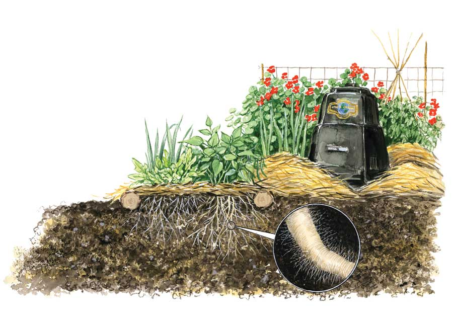
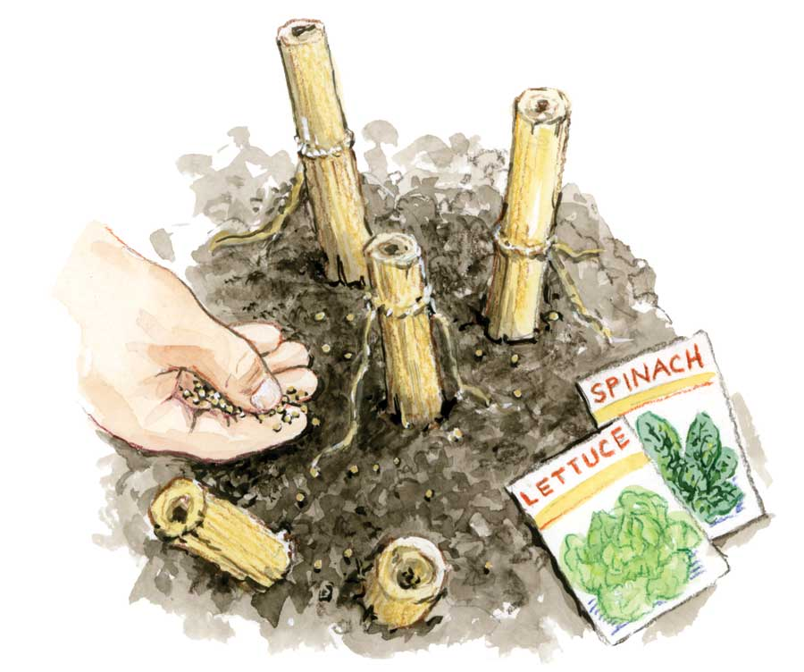
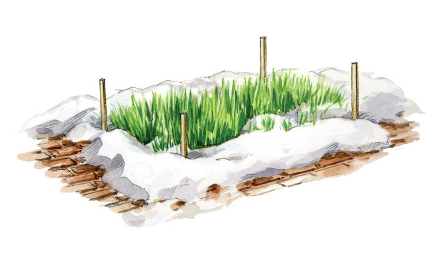

What techniques will you use to build better soil this season? Whether you’re filling new beds with bags of compost or tinkering with loam you’ve been nurturing for years, your first task may be to change the way you think. Sure, soil holds roots in place and helps them find moisture and nutrients. But truly superior soil goes beyond providing plants with a comfortable place to live and a seat at nature’s table. When it gets really good, soil does things we humans are just learning to appreciate.
Some gardeners think that building better soil is mostly a matter of adding the right amounts of the right organic amendments, and this is basically true. Above-average levels of organic matter are one key to developing soil that functions well as a nutrient storehouse and is a root-friendly place to be. But looking to compost or any other type of organic matter as the one thing your soil needs is like reading the first chapter of a book and saying you’re done. There is much more to the story.
Take microscopic fungi, for example. Some beneficial, soilborne fungi help some plants take up phosphorus, and others manufacture nitrogen - two of the big three plant nutrients normally provided in a bag of fertilizer. In return, the plants provide nutrients and a habitat for these helpful mycorrhizae, a general term for microcritters that live in, on or alongside plant roots. We can’t see them, but they are down there, big time.
The group called arbuscular fungi is especially interesting, because many of them penetrate plant roots with a spider web of branched hyphae (fungus “roots”), which also spread out into the surrounding soil. This symbiotic union extends the plant’s root system, helping it gain access to nutrients and moisture that would otherwise be out of reach. In return, the fungi get a share of the carbohydrates produced by the plants. As hyphae die (the invisibly small structures live for only a few days), the decomposing tissues feed bacteria, protozoa and all kinds of microscopic soil critters. And as this food web thrives, it releases nutrients for your crops.
The story gets better. The hyphae and spores of these plant-friendly fungi are coated with a sticky substance called glomalin, identified and named as recently as 1996 by USDA scientist Sara F. Wright. Glomalin is largely responsible for a soil’s tilth, or crumb structure, and it’s part of the soil’s nutrient storehouse, too. More soilborne fungi (producing more glomalin) lead to healthy, happy plants. Glomalin is also one of the compounds responsible for that earthy smell of fertile soils.
Each time you slather on some compost or mulch, you add starter colonies of these helpful fungi to your soil. After that, they basically want peace and quiet. Minimizing soil cultivation is the best way to host a robust mycorrhizal mob, because digging breaks up their hyphal networks. In the off-season, use of oats, rye and other grassy cover crops, on the other hand, turns your garden into mycorrhizal heaven. In nature, these beneficial fungi are always plentiful where deeply rooted grasses grow.
But how do you not cultivate the soil between plantings? In a few situations, you can practice stubble cropping, which means planting into soil without pulling out or chopping up the remains of the previous crop. For example, you can cut off bygone peas at the soil line and replace them with cucumbers or squash, and fall leafy greens will often thrive when grown over sweet corn stubble.
In addition to finding opportunities for stubble planting, ease back on unnecessary bed renovations in fall, the season in which you are likely to do the most harm. Like plants, most soilborne fungi stop growing when it gets cold. They depend on the growth they made during the summer and fall to ensure their winter survival. When microscopic fungi are killed en masse through cultivation, their decomposition causes a quick wave of nutrient release in the soil (picture a below-ground cover crop). So, cultivating in October - when you have no plans to grow anything until April or May - may set back one of your finest soil resources and waste nutrients your tomatoes would have loved. This entire tragedy can be averted by mulching over your spent beds in fall, and saving your digging for spring.
Whatever the season, mulching is a key way to help your microherd thrive. When researchers from the Southern University Agricultural Research and Extension Center in Louisiana studied the effects of keeping 4 inches of hardwood mulch over the root zones of live oak seedlings, they found that the little trees grew significantly faster, for three likely reasons: The soil’s physical properties improved, its nutrient content increased, and most importantly, the tree roots quickly and efficiently formed beneficial partnerships with soilborne fungi with the help of the mulch. The same things happen in the food garden with lettuce, onions, tomatoes, squash, strawberries and many other garden crops. Compost kick-starts the process, mulch keeps it going, and reduced cultivation protects and prolongs it.
Mulching with grass, leaves, hay or other organic materials is always a good idea for all types of soil, but what other soil amendments might you need? Soils that tend to be too acidic or alkaline make it difficult for many plants to take up nutrients, so pH is one soil characteristic that calls for a fact-finding approach. An acidic pH below 6.0 can be nudged upward with lime, and an alkaline pH above 7.5 can be lowered with sulfur, but neither should be used unless you know your pH is way off.
The $15 or so invested in a laboratory soil test arranged through your extension service, or a do-it-yourself soil-test kit, will be money well spent, because it will tell you what you have to work with. I like home soil-test kits because I can quickly check the pH in different parts of my garden and get a general idea of major nutrients present, too. These kits are sometimes dismissed as unreliable, but a recent study conducted by University of California soil scientists revealed that two brands - Rapitest and LaMotte - give accurate pH readings more than 90 percent of the time.
Unfortunately, no soil test can answer your most pressing question: Is there enough nitrogen present to meet the needs of the plants you want to grow? A soluble, slippery nutrient, nitrogen is hard to measure because temperature, pH, cultivation and many other factors affect its availability. Even if you know the history of the soil in a certain bed - including the amendments added and the crops grown - guesstimating nitrogen is a sticky business.
Ideally, you want to make sure that crop plants have just enough - but not too much - of this essential plant nutrient customarily found in manures, seed meals and dead plant and animal matter.
Nitrogen is probably already in good supply if you have been increasing the organic-matter content of your soil by digging in compost and using biodegradable mulches for several years, because organic matter stores nitrogen. Cool temperatures keep much of it locked away, but as temperatures increase, more nitrogen becomes available to plants. If you over-fertilize in spring (as many folks do in an attempt to speed up growth that is being held back by cool soil temperatures), it can backfire in a big way. Plants may grow to monstrous size, but they won’t start flowering until they have used up all that luscious nitrogen. You would have had a better crop with no fertilizer at all!
As a general guideline, soil that has been steadily improved with organic amendments for three years or more should have an organic-matter content of at least 3 percent. This amount of organic matter holds enough nitrogen to support low-demand crops with short growing seasons without additional fertilizer. Low-demand vegetable crops include beans, squash, baby salad greens and cucumbers.
As more long-lived crops such as tomatoes, carrots and sweet corn reach adolescence, they may exhaust the nutrient supply within reach of their roots. This is why these vegetables (and many reblooming flowers) benefit from a midseason side dressing with a high-nitrogen fertilizer. In addition to ensuring good crops, midseason feedings with alfalfa, cottonseed meal or a blended organic fertilizer - along with biodegradable mulches and limited tilling - protect the soil’s nutrient reserves, making it fit for replanting right away.
Only the most fertile soils can support nitrogen-hungry cabbage family crops, which are among the few vegetables that seldom forge beneficial relationships with soilborne fungi. Mix an organic fertilizer into the soil prior to planting cabbage family crops, and then be patient.
Soil pH readings and other characteristics that can be distilled into numbers are useful, but the best thing you can do to build better soil is to respect it as a diverse community of living, breathing organisms. In your mind and in your methods, cast off what Cornell University plant physiologist David W. Wolfe calls “surface chauvinism” - the tendency to think that what we see at the soil’s surface tells the whole story, and that it’s all we need to know. You would be wiser to nurture the hidden soil food web. In the long run, compost plus mulch plus limited tilling will give you better soil and better harvests, with less work than “conventional” methods.
|
 ELAYNE SEARS Using compost and mulch while limiting tilling will nurture your soil’s food web and give you better harvests. |
 ELAYNE SEARS To minimize tillage, sow fall crops without pulling out the roots of the previous crop. |
 ELAYNE SEARS Fall-sown cover crops, such as winter rye, offer a hospitable habitat for beneficial fungi to live in over the winter. |